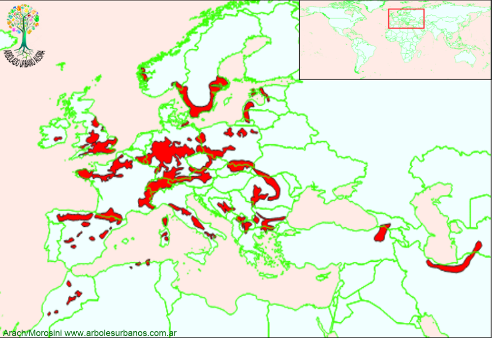

Click en las imágenes para ampliar

{kind=link}
{kind=link}
Tejo común
NOMBRE CIENTÍFICO: Taxus Baccata
FAMILIA BOTÁNICA: Taxáceas
ORIGEN: El tejo es una especie distribuida por el centro y oeste de Europa, naturalmente muy disperso desde el norte de África, hasta la península escandinava e islas británicas y por el este hasta el Cáucaso, aunque todo indica que se asilvestró por toda Europa.
DESCRIPCIÓN GENERAL: esta es una conífera siempreverde de segunda magnitud, aunque hay ejemplos de individuos de casi 20 metros de altura. En general tiene una copa extendida con varios ejes de surgen a baja altura
HOJAS: Su follaje es perenne, está formado por hojas lineares y planas de color verde oscuro en la cara superior y con bandas estomáticas blanquecinas en la parte inferior.
ESTRÓBILOS: esta es una especie dioica, lo individuos machos tienen estróbilos pequeños de color amarillo que contienen el polen. Los estróbilos femeninos son esféricos de casi un cm de diámetro, la única semilla que contiene está rodeada de un tegumento carnoso de color rojo, es altamente tóxico para el consumo.
USOS: En la antigüedad se utilizaba su madera para realizar arcos. Es una especie que se utiliza mucho ornamentalmente, tanto en cercos, como para individuos aislados, por su lento crecimiento se lo usa para realizar topiarios. Se lo planta como ejemplar aislado. No es exigente con respecto a los suelos, salvo que sean muy ácidos, debe conservar la humedad y no tolera las altas insolaciones
REPRODUCCIÓN: Se puede reproducir por semilla, aunque es mucho más rápido la reproducción asexual por estacas, es una conífera que enraíza relativamente más fácil que otras.
PARTICULARIDADES: Es una especie muy longeva superando muchas veces los 1,500 años, a su vez tiene un significado cultural muy importante para los pueblos originarios de Europa, formando parte de muchos relatos de la cultura celta por ejemplo.